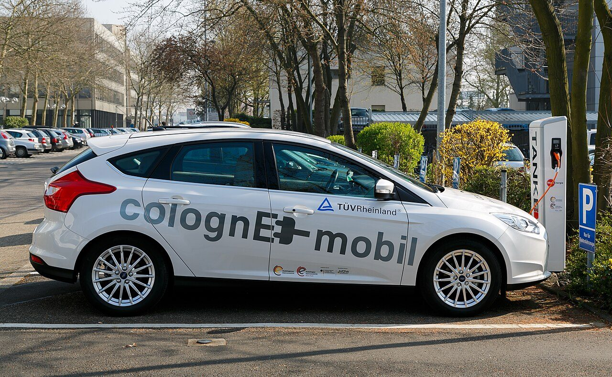

Notícias internacionais em português, com contexto pro Brasil e a fonte sempre no lugar.

O Fórum Econômico Mundial e a Frontiers elegeram a energia bidirecional a tecnologia emergente número um de 2026. Entenda o conceito e por que ele faz sentido especial no Brasil.
Cobertura Watermouse Media · fonte: Fórum Econômico Mundial + Frontiers
Contrato escrito, segurança social, férias e proteção contra assédio. Um espelho da nossa PEC das Domésticas.
MundoRuto mandou afastar estrangeiros da venda ambulante; após o alvoroço, o governo amarrou a medida a uma lei.
MundoUm acordo no espírito do Artigo 5 une três potências e soma cerca de 1,4 milhão de militares.
MundoUm seguro nacional de cuidados de longo prazo, e uma prévia de um debate que o Brasil vai ter.
MundoPequim avança sobre o quintal histórico de Moscou e redesenha o mapa de influência da região.
O BVR-19, da Oregon State, usa a luz para quebrar a água e dispensa os catalisadores de metais raros e caros.
TecnologiaA energia bidirecional foi eleita a tecnologia emergente número 1 de 2026 pelo Fórum Econômico Mundial.
TecnologiaUm novo método acelera drasticamente as operações e aproxima o computador quântico útil.
TecnologiaNove startups indianas entram na lista de Pioneiras da Tecnologia do Fórum Econômico Mundial.
TecnologiaA startup Unigrid validou com a Hyundai uma bateria barata que não pegou fogo e aguenta de -20°C a 60°C.
TecnologiaFísicos da Duke reproduziram a formação de partículas a partir de energia, algo ligado ao início do universo.
TecnologiaSais de alumínio derretidos quebram o polietileno em combustível a menos de 200°C, com ~60% de rendimento.
Com átomos presos por laser, Caltech confirmou na prática uma teoria de quatro décadas que nunca tinha sido medida diretamente.
CiênciaA parte que pensa e a parte que mantém você vivo nasceram de linhagens celulares diferentes.
CiênciaExames de PET encontraram até 20% menos densidade de dopamina no cérebro de quem tem COVID longa.
CiênciaO achado derruba um velho dogma e abre caminho para tratar a insuficiência cardíaca.
CiênciaResíduos de remédios mudam o comportamento dos peixes e acendem um alerta ambiental.
CiênciaParte da fraqueza da velhice vem da falha nervo-músculo, e cientistas conseguiram reverter em laboratório.
CiênciaEstrelas gigantes pobres em metais têm ventos bem mais fracos que o previsto, e isso muda tudo.
CiênciaNo sono REM, chega mais combustível ao cérebro, mas a energia dos neurônios cai. Um paradoxo.
CiênciaUma reanálise põe o sobrediagnóstico abaixo de 5%, contra estimativas antigas de 30% a 50%.
CiênciaOs tecidos que cicatrizam mal ganham uma pista; a mesma célula, hiperativa, explica a estenose espinhal.
CiênciaO gelo que a lua de Saturno cospe ao espaço já vem com os compostos do oceano separados e concentrados.
Há 2.500 GW de projetos renováveis parados em filas de conexão. A iniciativa mira África e Sudeste Asiático.
NegóciosAIIB e Benin fecham pipeline de US$ 730 mi: sinal de que o Sul Global diversifica quem o financia.
NegóciosEm 2025, vento e sol geraram 30% da eletricidade do bloco, à frente dos combustíveis fósseis.
NegóciosCerco ao greenwashing que respinga em quem exporta para a Europa, inclusive do Brasil.
NegóciosUm acordo com o Afreximbank vai destravar uma carteira de projetos de US$ 11,5 bilhões.
NegóciosUm experimento monetário ambicioso que pode enterrar o franco CFA, ligado à França.
"Obra do Mestre Muhammed de Tabriz": o artesão escondeu sua marca no pé da lápide, não no topo.
CulturaEm Çayönü, um espaço construído de propósito para processar minério: um dos registros mais antigos de produção especializada de metal.
CulturaA descoberta na Turquia amplia o que sabíamos sobre um dos sítios mais antigos do mundo.
CulturaO alfabeto do sidético, morto há 2 mil anos, sobe de 26 para 31 sinais na Turquia.
CulturaA escrita minoica resiste há mais de um século. A alegação é forte e está sob revisão de especialistas.
Uma vez por semana, as matérias internacionais que importam, em português. Sem spam.
Ao assinar, você concorda em receber a newsletter e comunicações por e-mail e, conforme a política de privacidade, com o uso dos seus dados para medição e anúncios.